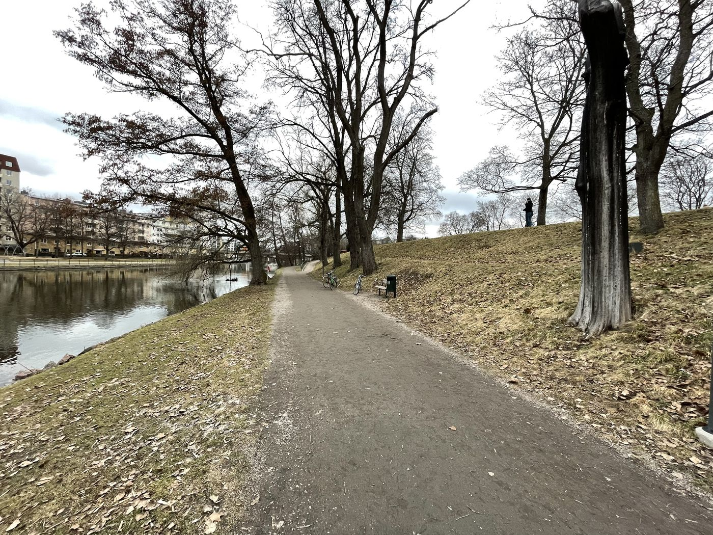
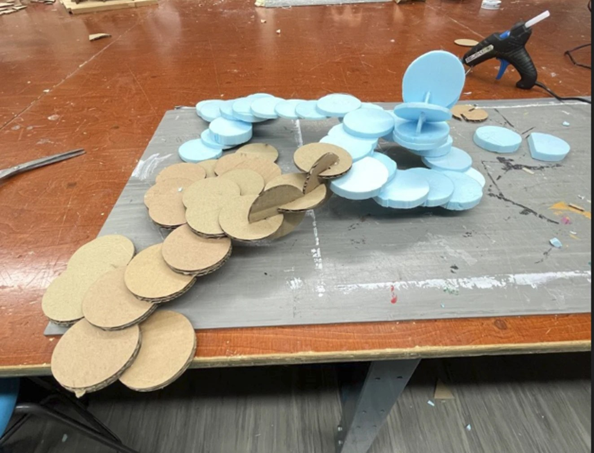
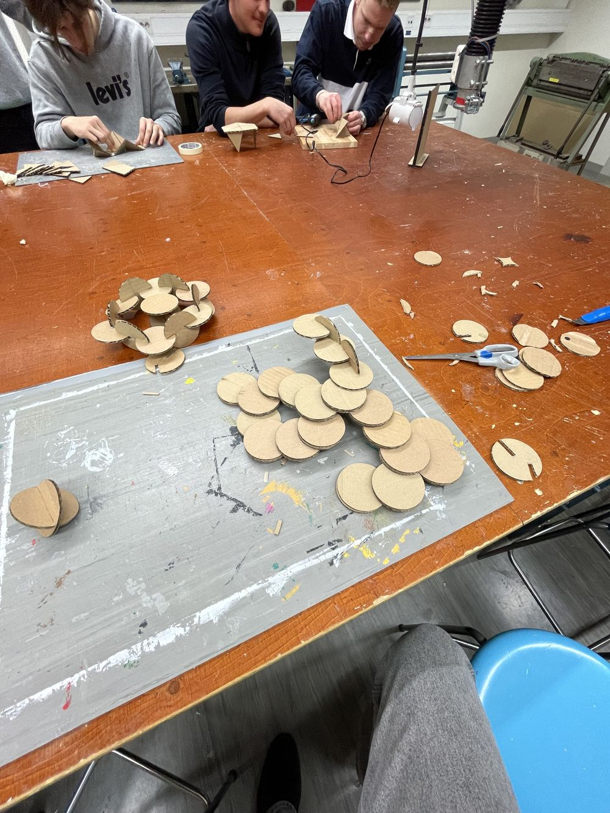

Course project · Year 1 · 2024
Åbacka
Site-specific outdoor furniture, with form, function and material taken from the place itself.
Introduction
Outdoor furniture for one place: the riverbank along Stångån in Linköping.
The work started on site, studying how people move along the path, where they stop and how the slope meets the water.


From generation to generation.
Process
Repetition as a method: simple discs and slices, cut and stacked, to find how the riverbank could become a place to sit.
Quick models in cardboard and foam explored rhythm, curves and height. The final model was built the same way as the full-scale furniture: from stacked, individually cut sections.



From loose experiments to cut sections.


Assembling the base, and the finished model.
Meeting place
Two sofas with seats back to back, so different groups can share the same place.
Some sit facing the path and the people walking by, others face the water. A passage between the sofas leads down to the river, where there is room to sit right at the edge of the deck.
Top view of the meeting place.
Result
A tree-like pergola connects the path with the meeting place and gives shade and shelter.

Next project
Celina →